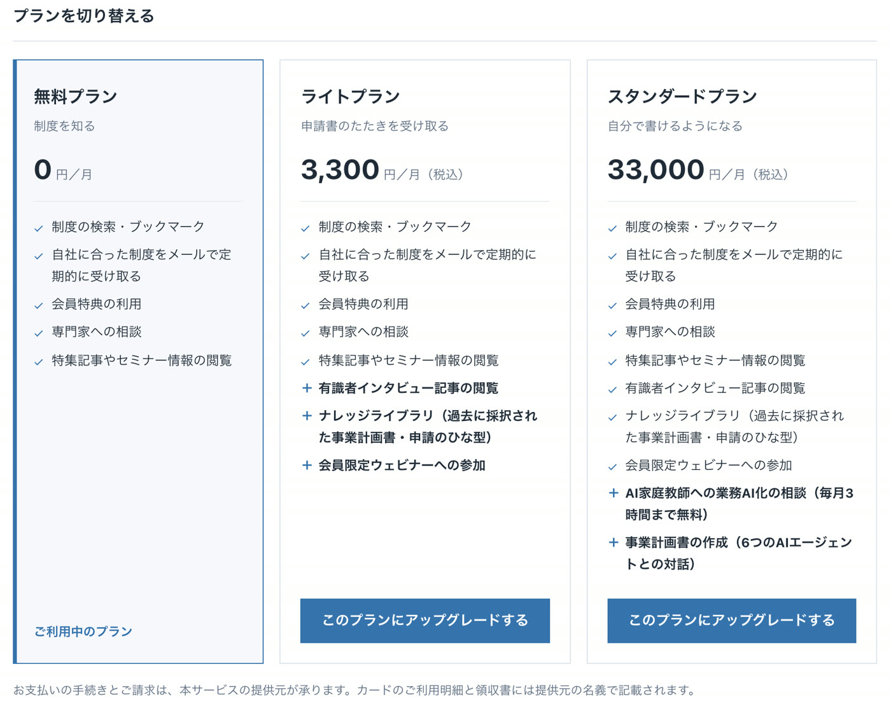
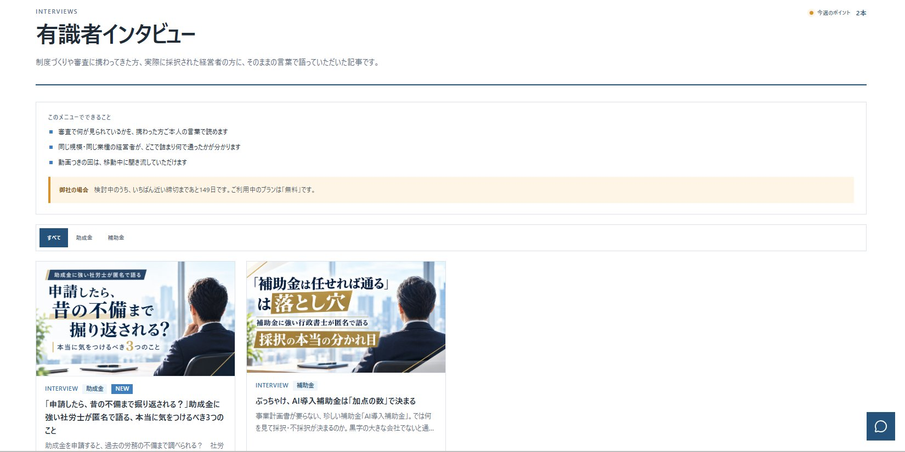
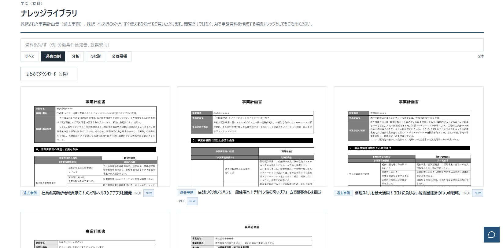
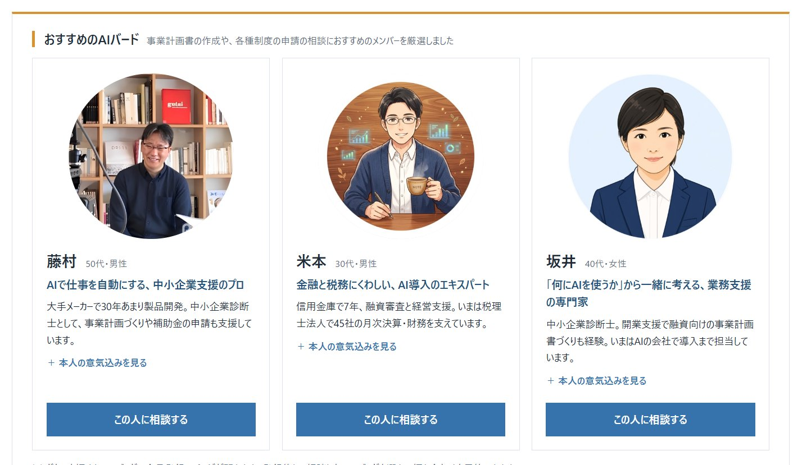

PAID PLAN
はじめかたガイド
有料プランの使い方
有料プランの料金と、有料メニュー4つの使い方です。
PLAN
有料プラン
ここまでの手順は無料プランのままお使いいただけます。計画書の実例を見たい、自分で書けるようになりたいときは、有料プランをご検討ください。
| 使えるもの | 無料プラン | ライトプラン | スタンダードプラン |
|---|---|---|---|
| 月額（税込） | 0円 | 3,300円 | 33,000円 |
| こんな方に | 制度を知る | 申請書のたたきを受け取る | 自分で書けるようになる |
| 制度の検索・ブックマーク | ○ | ○ | ○ |
| 自社に合った制度をメールで定期的に受け取る | ○ | ○ | ○ |
| 会員特典の利用 | ○ | ○ | ○ |
| 専門家への相談 | ○ | ○ | ○ |
| 特集記事やセミナー情報の閲覧 | ○ | ○ | ○ |
| 有識者インタビュー記事の閲覧 | － | ○ | ○ |
| ナレッジライブラリ（過去に採択された事業計画書・申請のひな型） | － | ○ | ○ |
| 会員限定ウェビナーへの参加 | － | ○ | ○ |
| AI家庭教師への業務AI化の相談（毎月2時間まで無料） | － | － | ○ |
| 事業計画書の作成（6つのAIエージェントとの対話） | － | － | ○ |
プランを変えるには
- 左メニューの設定を開き、ご利用プランを押します。
- 使いたいプランのこのプランにアップグレードするを押します。
- お支払いの画面で、クレジットカードを登録します。
解約するとき同じ「ご利用プラン」の画面にある解約・プランを下げるご相談はこちらから、お問い合わせフォームでご連絡ください。担当者が確認のうえ、お手続きをご案内します。

PLAN 1
有識者インタビュー
制度づくりや審査に携わってきた方、実際に採択された経営者の方のお話を、ご本人の言葉で読めます。ライトプランからお使いいただけます。
- 左メニュー「学ぶ（有料）」の有識者インタビューを開きます。
- 上のすべて助成金補助金で、読みたい分野にしぼれます。
- 読みたい記事を押すと、記事が開きます。動画つきの回は、移動中に聞き流すこともできます。

PLAN 2
ナレッジライブラリ
実際に採択された事業計画書（過去事例）や、採択・不採択の分析、すぐ使えるひな形を見られます。ライトプランからお使いいただけます。
- 左メニュー「学ぶ（有料）」のナレッジライブラリを開きます。
- 上の欄にことば（例：就業規則）を入れて探すか、過去事例分析ひな形公募要領でしぼります。
- 見たい資料を押すと、中身を見られます。まとめてダウンロードを押すと、表示中の資料をまとめて保存できます。
ポイント計画書を書くときの手本として、そのままお使いいただけます。AI CFOで計画書を作るときの参考資料にもなります。

PLAN 3
AI家庭教師
AIにくわしい講師（AIバード）に、オンラインで相談できます。スタンダードプランからお使いいただけます。毎月2時間まで無料です（お打ち合わせの時間も含みます）。
- 左メニュー「学ぶ（有料）」のAI家庭教師を開きます。
- 相談したい講師のこの人に相談するを押します。
- AIバードに登録し、ご都合のよい日時を予約します。
- 予約した日時に、オンラインで相談します。

PLAN 4
AI CFO
御社の相談相手になるAIです。社長のお話を聞きながら、相談の中身に合わせて専門の視点を持つAIの仲間が加わり、書類づくりを御社と一緒に進めます。スタンダードプランからお使いいただけます。
始め方（最初の1回だけ・約3分）
AI CFOは、「Claude（クロード）」というAIのアプリにつないで使います。先にClaudeのアプリを入れて、ログインしておいてください。
- 左メニューの事業計画書をつくるを開き、表示されるURLのコピーを押します。
- Claudeの設定→コネクタ→カスタムコネクタを追加を開き、名前を「AI CFO」にして、コピーしたURLを貼ります。
- 連携するを押すと、Jマッチのログイン画面が開きます。ログインして許可するを押します。
- ClaudeのアプリでCodeを開き、「AI CFOを始めたいです。」と送ります。AI CFOが質問を始めます。
ポイントつなぐのは最初の1回だけです。2回目からは、Claudeで「AI CFOを始めたいです。」と送るだけで始められます。つなぎ方で迷ったら、AI家庭教師で講師と一緒に進められます。
ご注意AI CFOに出てくる専門家（診断士・税理士など）は、AIの視点です。資格を持つ人が対応するものではありません。申請を代わりに行うこともありません。申請まで相談したいときは、専門家に相談をご利用ください。